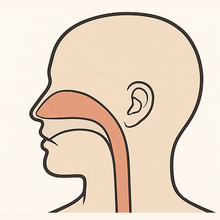
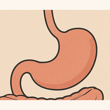
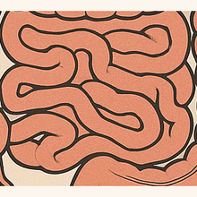
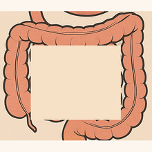
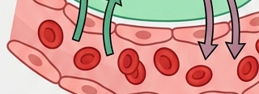

Altres paraules: digerir = يهضم · sang = الدم · múscul = العضلة · fetge = الكبد · bacteri = البكتيريا · femta = البراز · budell = الأمعاء
Uneix cada paraula amb el que vol dir. La primera és l'exemple.
Copia cada paraula en català.
El menjar fa un camí llarg dins el cos: un tub d'uns 9 metres. A la boca el mastegues. A l'estómac, l'àcid el desfà. A l'intestí prim, els nutrients passen a la sang. A l'intestí gros es treu l'aigua i es fa la femta.
Llegeix la pista de cada caixa. Busca el nom al banc de paraules i al dibuix. Escriu-lo a la línia. La 1 (boca) és l'exemple.
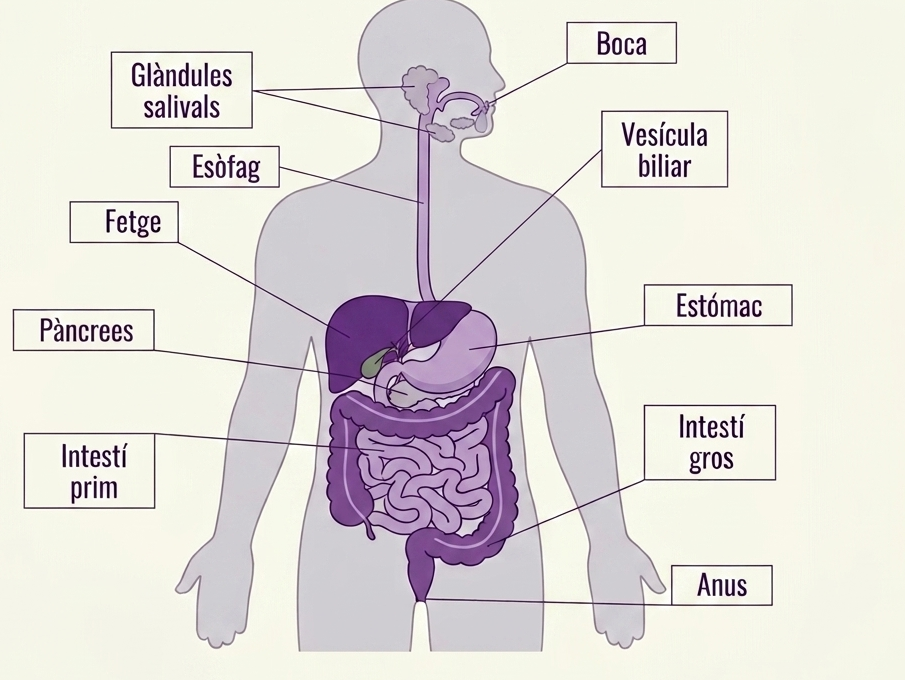
A classe fem una simulació: un experiment que imita la digestió. El vinagre fa d'àcid de l'estómac. Una mitja fa de paret de l'intestí prim: deixa passar les coses petites, com la glucosa. El líquid que cau al bol fa de sang.
A cada fila, encercla què fa aquella part. Només una opció és bona. La boca és l'exemple.
Quan el pa és dins el vinagre, el pa es torna .
Per quina raó es desfà el pa?
He llegit que el vinagre fa d' de l'estómac.
Per tant, l'àcid de l'estómac serveix per .
El pa té glucosa. L'estómac desfà el pa, però la glucosa encara no passa a la sang. Passa a la sang a l'intestí prim: la seva paret té milers de vellositats, i dins de cada vellositat hi ha capil·lars. La glucosa travessa la paret i entra al capil·lar. Després la sang la porta fins al múscul. Allà, el mitocondri la crema i fa energia.
 Múscul
Múscul
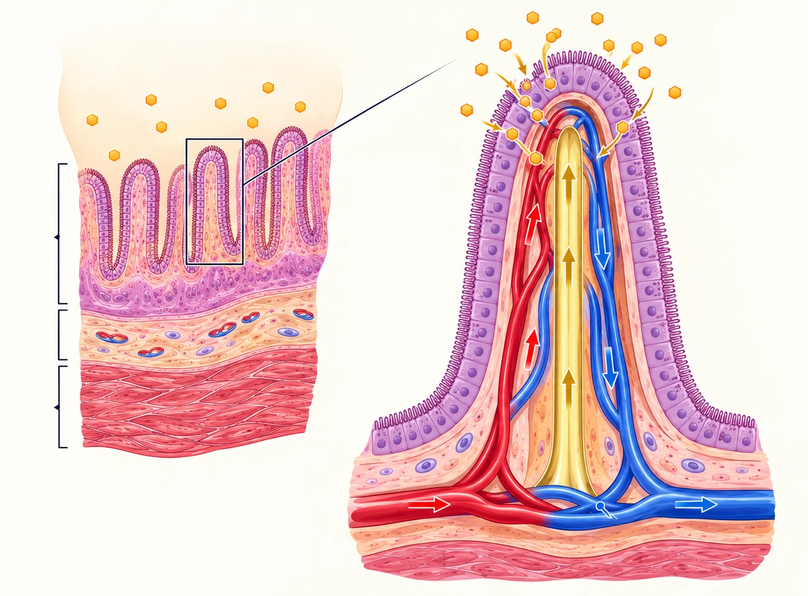
La Mercè corre i no ha dinat. Li costa moure les cames. Què li falta al mitocondri dels músculs? Encercla.
Li costa moure les cames perquè el mitocondri no té per fer .
La glucosa passa de l'intestí prim a la sang pel capil·lar. La sang la porta al múscul, i el mitocondri en fa energia.
Dins l'intestí viuen molts bacteris bons: la microbiota. Ens ajuden a digerir, fan vitamines i ens protegeixen dels bacteris dolents. Els antibiòtics són medicaments que maten bacteris. Però no saben triar: maten els dolents i també els bons.
Els antibiòtics poden causar diarrea (femta líquida). Per quina raó? Encercla.
Els antibiòtics maten els bacteris dolents i també .
La femta és el que el cos no aprofita. Els metges la classifiquen en 7 tipus: l'escala de Bristol. Tipus 3 i 4 = normal. Tipus 1 i 2 = dura: falta aigua i fibra (fruita, verdura). Tipus 5, 6 i 7 = tova o líquida: diarrea.
Pinta el cercle de cada tipus amb el color de la llegenda. El 4 ja està pintat: és l'exemple.
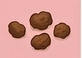
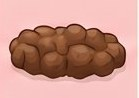
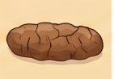
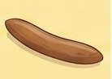
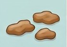
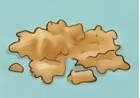
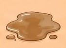
Un noi fa femta del tipus 1. És dura normal líquida. Li falta beure més i menjar més .
📚 Tasca per a casa · cada dia 10 minuts: ① llegeix una targeta en català · ② mira les imatges i les Paraules d'avui · ③ tapa-la i explica-la en veu alta en català · ④ al final del full, marca ✔ quan ho sàpigues. Opcional: mira de quin tipus de Bristol és la teva femta (a classe ho direm sense nom).
📖 Llegeix la lectura de la Sessió 3. A l'inici de la propera sessió faràs el formulari de comprensió (Google Forms).
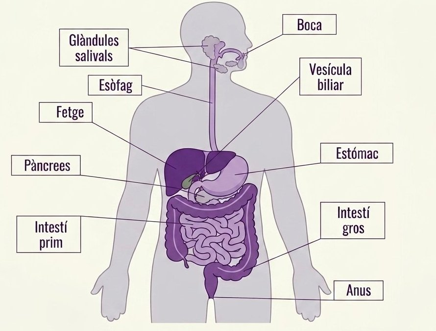
El menjar passa per un tub d'uns 9 metres. Cada part el desfà una mica més. El fetge i el pàncrees ajuden: fan sucs que s'aboquen a l'intestí, però el menjar no hi passa. El que el cos no aprofita surt per l'anus: és la femta.
desfà el menjar i mata bacteris
el pàncrees hi posa bicarbonat
L'estómac fa àcid (HCl). El menjar en surt molt àcid. Al duodè (el principi de l'intestí prim), el pàncrees hi aboca bicarbonat, que treu l'acidesa. Així els enzims de l'intestí poden treballar: amb massa àcid, no funcionen. A classe, el vinagre feia d'àcid.
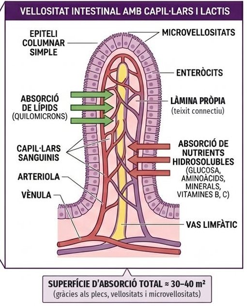
① La paret de l'intestí prim té milions de vellositats. Si l'estiréssim, ocuparia 30–40 m²: com una aula sencera. Molta superfície = passa molta glucosa.
② Dins cada vellositat hi ha capil·lars. La seva paret és molt prima: una sola cèl·lula. La glucosa i els aminoàcids la travessen i entren a la sang.
③ A l'estómac no passa: és massa àcid i no té vellositats.
Del capil·lar, la glucosa va per la vena porta fins al fetge. Després la sang passa pel cor, que l'envia per les artèries a tot el cos. Al múscul, el mitocondri crema la glucosa amb oxigen i fa energia (ATP). Compte: la glucosa no va de l'estómac directament al múscul. Sempre passa per l'intestí prim i la sang.
A l'intestí hi viuen més de 100 bilions de bacteris: pesen uns 0,5 kg! Fan vitamines, ens protegeixen dels bacteris dolents i ajuden les defenses. Els antibiòtics maten també els bacteris bons: per això poden causar diarrea.
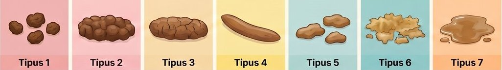
Tipus 1–2: dura, el menjar va massa a poc a poc (falta aigua i fibra). Tipus 3–4: normal, l'intestí va bé. Tipus 5–7: tova o líquida, va massa de pressa (diarrea).